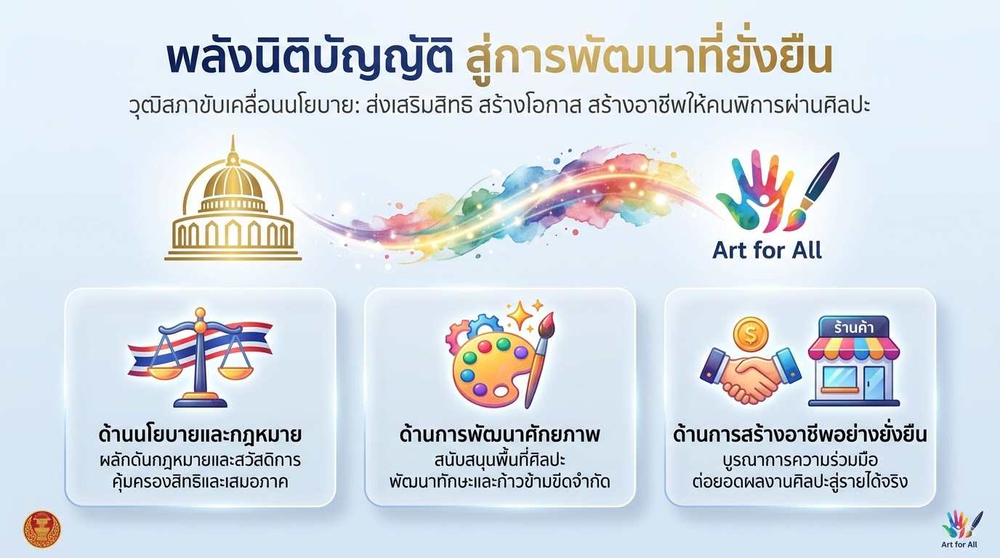
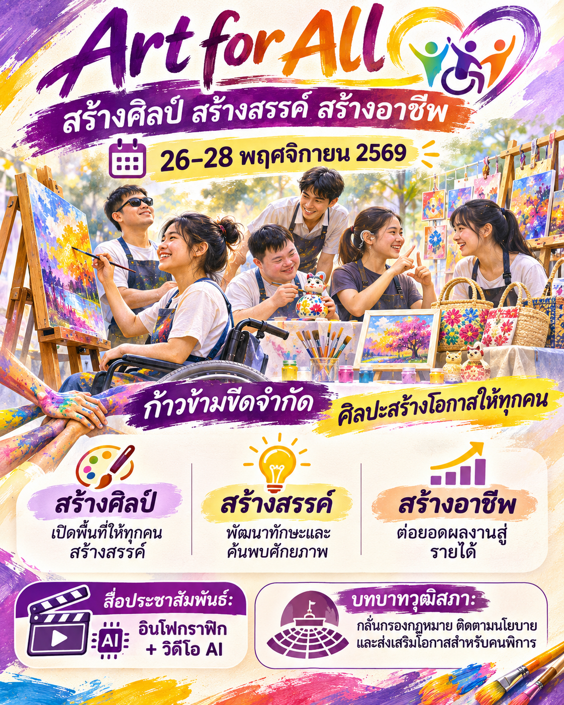
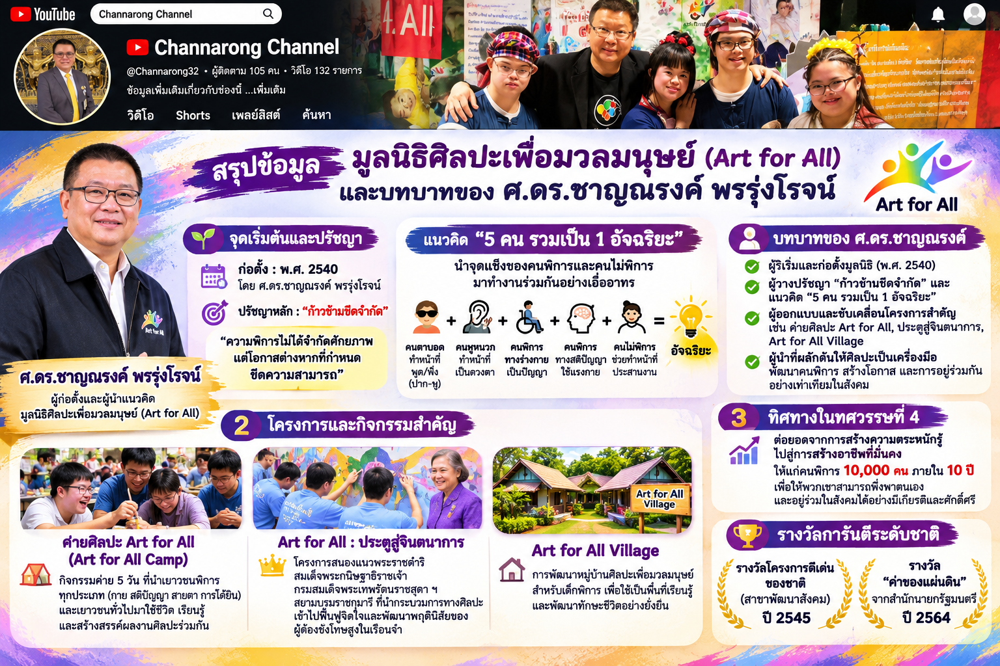

Art for All
สร้างศิลป์ สร้างสรรค์ สร้างอาชีพ
ผสานพลังศิลปะแห่งมวลมนุษย์สู่ "พลังนิติบัญญัติเพื่อความยั่งยืน" โดยวุฒิสภา ก้าวข้ามทุกขีดจำกัด พัฒนาศักยภาพคนพิการ และต่อยอดผลงานสู่การสร้างอาชีพที่มั่นคงและมีศักดิ์ศรี
สร้างศิลป์
เปิดพื้นที่ปลอดภัยและโอกาสที่เท่าเทียม ให้ทุกคนได้แสดงออกและปลดปล่อยพลังสร้างสรรค์
สร้างสรรค์
พัฒนาทักษะ ค้นพบศักยภาพที่ซ่อนอยู่ภายใน และเรียนรู้การอยู่ร่วมกันอย่างเอื้ออาทร
สร้างอาชีพ
เชื่อมโยงผลงานศิลปะสู่เศรษฐกิจจริง สร้างรายได้ที่มั่นคงและพึ่งพาตนเองได้อย่างยั่งยืน
ศ.ดร.ชาญณรงค์ พรรุ่งโรจน์
สมาชิกวุฒิสภา & ผู้ก่อตั้งมูลนิธิศิลปะเพื่อมวลมนุษย์ (Art for All)
ริเริ่มก่อตั้งมูลนิธิ Art for All ตั้งแต่ปี พ.ศ. 2540 โดยมุ่งหวังให้ศิลปะเป็นสะพานเชื่อมความรัก ความเข้าใจ และปลดล็อกศักยภาพของคนพิการทุกประเภทสู่สังคม
"ความพิการไม่ได้จำกัดศักยภาพ แต่โอกาสต่างหากที่กำหนดขีดความสามารถ"
รางวัล "ค่าของแผ่นดิน" (ปี 2564)
จากสำนักนายกรัฐมนตรี มอบแด่บุคคลและองค์กรผู้ทำคุณประโยชน์สูงสุดแก่สังคม
รางวัลโครงการดีเด่นของชาติ (ปี 2545)
สาขาพัฒนาสังคม คัดสรรโดยคณะกรรมการเอกลักษณ์ของชาติ
กว่า 29 ปีแห่งการก้าวข้ามขีดจำกัด สู่ทศวรรษที่ 4 แห่งการสร้างอาชีพ
มูลนิธิศิลปะเพื่อมวลมนุษย์ (Art for All) ได้พิสูจน์แล้วว่าศิลปะคือภาษาสากลที่ไม่จำกัดสายตา หู หรือร่างกาย และเมื่อนำจุดแข็งของคนแต่ละกลุ่มมาทำงานร่วมกัน จะเกิดพลังสร้างสรรค์อันไร้ขีดจำกัด
จุดเริ่มต้นแห่งโอกาส
ก่อตั้งค่ายศิลปะ Art for All นำเด็กพิการและเยาวชนทั่วไปมาใช้ชีวิตและเรียนรู้ร่วมกัน
เป้าหมายทศวรรษที่ 4
สร้างอาชีพที่มั่นคง มีรายได้เลี้ยงดูตนเองและครอบครัว ภายในระยะเวลา 10 ปี
บูรณาการไร้รอยต่อ
เชื่อมโยงวุฒิสภา ภาควิชาการ และประชาสังคม เพื่อขับเคลื่อนนโยบายที่เป็นรูปธรรม
นวัตกรรมสื่อยุคใหม่
ประยุกต์ใช้นวัตกรรม Generative AI ในการสื่อสารและขยายผลงานสู่ระดับสากล
โมเดล "5 คน รวมเป็น 1 อัจฉริยะ"
ไม่มีใครสมบูรณ์แบบในทุกด้าน แต่เมื่อนำจุดแข็งของคนพิการแต่ละประเภทและคนทั่วไปมาร้อยเรียงเข้าด้วยกัน เราจะสามารถสร้างผลงานศิลปะและนวัตกรรมระดับอัจฉริยะได้เสมอ
คนตาบอด
ทำหน้าที่: ปาก & หูสัมผัสเสียงอันลึกซึ้ง มีทักษะการรับฟัง การถ่ายทอดคำพูด และการสื่อสารอารมณ์ได้อย่างมีพลัง
คนหูหนวก
ทำหน้าที่: ดวงตาความละเอียดอ่อนในการสังเกตภาพ สีสัน เส้นสาย และมุมมองเชิงทัศนศิลป์ที่คมชัด
พิการทางร่างกาย
ทำหน้าที่: ปัญญาพลังการคิดวิเคราะห์ วางโครงสร้างกลยุทธ์ การออกแบบความคิดสร้างสรรค์ และการวางแผน
พิการทางสติปัญญา
ทำหน้าที่: แรงกายพลังความมุ่งมั่น ทุ่มเทแรงกายอย่างจริงใจ ลงมือทำอย่างจดจ่อและไม่ย่อท้อ
คนทั่วไป
ทำหน้าที่: ประสานงานผู้เชื่อมโยง ช่วยอำนวยความสะดวก จัดการ และเติมเต็มความเอื้ออาทรให้ทีมขับเคลื่อนร่วมกัน
ผลลัพธ์: 1 อัจฉริยะ (The Collective Genius)
เมื่อผสานจุดแข็ง ความต่างจะกลายเป็นพลังสูงสุดที่สร้างสรรค์งานศิลป์และสังคมได้จริง
พลังนิติบัญญัติ สู่การพัฒนาที่ยั่งยืน
บทบาทสำคัญของวุฒิสภาในการเป็นกลไกขับเคลื่อนสิทธิ เสรีภาพ และสร้างโอกาสอย่างเสมอภาคให้แก่คนพิการทั่วประเทศ

1. ด้านนโยบายและกฎหมาย
กลั่นกรองและผลักดันกฎหมาย สวัสดิการ ตลอดจนนโยบายสาธารณะที่คุ้มครองสิทธิ เสรีภาพ และความเสมอภาคของคนพิการในทุกมิติ
- ติดตามการบังคับใช้กฎหมายส่งเสริมคนพิการ
- ผลักดันโครงสร้างพื้นฐานที่เข้าถึงได้ (Universal Design)
2. ด้านการพัฒนาศักยภาพ
สนับสนุนพื้นที่ทางสังคม นำกระบวนการทางศิลปะมาเป็นเครื่องมือเยียวยา ฟื้นฟูจิตใจ และเสริมสร้างศักยภาพให้ผู้พิการก้าวข้ามข้อจำกัด
- จัดสรรพื้นที่เรียนรู้และค่ายศิลปะสร้างสรรค์
- ฟื้นฟูจิตใจและสร้างความตระหนักรู้ในคุณค่าตนเอง
3. ด้านการสร้างอาชีพ
บูรณาการระหว่างภาครัฐ ภาคเอกชน และเครือข่ายศิลปิน เพื่อยกระดับผลงานสร้างสรรค์สู่ตลาดมืออาชีพ และสร้างงานสร้างรายได้ที่มั่นคง
- จับคู่ธุรกิจและตลาดรับซื้อผลงานศิลปะ
- สร้างโมเดลเศรษฐกิจสร้างสรรค์สำหรับคนพิการ
โครงการและกิจกรรมสำคัญ
การเดินทางของโครงการที่สร้างผลกระทบเชิงบวกและเป็นรูปธรรมต่อสังคมไทย
ค่ายศิลปะ Art for All (Art for All Camp)
กิจกรรมค่าย 5 วัน ที่นำเยาวชนพิการทุกประเภท (กาย สติปัญญา สายตา การได้ยิน) และเยาวชนทั่วไป มาใช้ชีวิต เรียนรู้ และสร้างสรรค์ผลงานศิลปะร่วมกัน เกิดเป็นมิตรภาพและความเข้าใจไร้พรมแดน
Art for All: ประตูสู่จินตนาการ
โครงการสนองแนวพระราชดำริ สมเด็จพระกนิษฐาธิราชเจ้า กรมสมเด็จพระเทพรัตนราชสุดา ฯ สยามบรมราชกุมารี ที่นำกระบวนการทางศิลปะเข้าไปฟื้นฟูจิตใจและพัฒนาพฤตินิสัยของผู้ต้องขังโทษสูงในเรือนจำ
Art for All Village
การพัฒนาหมู่บ้านศิลปะเพื่อมวลมนุษย์สำหรับเด็กพิการ เพื่อใช้เป็นพื้นที่เรียนรู้ ฝึกฝนทักษะอาชีพ และพัฒนาทักษะชีวิตอย่างยั่งยืน อยู่ร่วมกับธรรมชาติและชุมชนอย่างกลมกลืน
นวัตกรรมสื่อประชาสัมพันธ์ & วิดีโอ AI
รับชมวิดีโอประชาสัมพันธ์โครงการ และการนำเทคโนโลยีปัญญาประดิษฐ์ (AI) มารังสรรค์สื่อถ่ายทอดพลังแห่งโอกาส
Art for All ศิลปะสร้างโอกาส
วิดีโอประชาสัมพันธ์โครงการ "Art for All: สร้างศิลป์ สร้างสรรค์ สร้างอาชีพ" สื่อสารบทบาทของวุฒิสภา และพลังแห่งการก้าวข้ามขีดจำกัดของคนพิการสู่โอกาสที่เท่าเทียม
Art Project Video Scene Breakdown
วิดีโอลำดับการแจกแจงฉาก (Scene Breakdown) และการออกแบบภาพด้วยปัญญาประดิษฐ์ (AI Video) ถ่ายทอดโมเดล 5 คน รวมเป็น 1 อัจฉริยะ จากผืนผ้าใบสู่อาชีพจริง
สคริปต์วิดีโอ AI (ความยาว 60 วินาที)
โครงสร้างบทบรรยายและภาพจำลองสำหรับสร้างด้วยโมเดล Video AI
ฉากที่ 1: ประกายแห่งจินตนาการ (Spark of Imagination)
ภาพ: ผืนผ้าใบสีขาว จานสี และมือของเยาวชนที่จับพู่กันร่วมกัน แสงนุ่มนวลสะท้อนดวงตาแห่งความมุ่งมั่น
เสียงบรรยาย: "ความพิการอาจสร้างข้อจำกัดทางกายภาพ... แต่ไม่เคยหยุดยั้งหัวใจแห่งการสร้างสรรค์"
ฉากที่ 2: พลังแห่ง 5 รวมเป็น 1 (5 in 1 Genius in Action)
ภาพ: การแบ่งบทบาทตามโมเดล คนตาบอดส่งเสียง คนหูหนวกบรรจงแต้มสี เพื่อนช่วยพยุง และร่วมกันเนรมิตภาพวาดขนาดใหญ่
เสียงบรรยาย: "เมื่อดวงตา ปาก หู แรงกาย และปัญญา หลอมรวมเป็นหนึ่ง... เราทุกคนคือ 'อัจฉริยะ' ที่สร้างสิ่งมหัศจรรย์ได้ร่วมกัน"
ฉากที่ 3: จากศิลปะสู่อาชีพจริง (From Canvas to Sustainable Career)
ภาพ: ผลงานศิลปะถูกแปลงเป็นสินค้า กระเป๋า เสื้อผ้า ของตกแต่งบ้าน และการจัดแสดงในหอศิลป์ระดับชาติ
เสียงบรรยาย: "ไม่ใช่แค่ความเพลิดเพลิน แต่คืออาชีพ คือรายได้ และคือศักดิ์ศรีความเป็นมนุษย์ที่พึ่งพาตนเองได้"
ฉากที่ 4: พลังนิติบัญญัติเพื่อความยั่งยืน (Senate's Legacy)
ภาพ: อาคารรัฐสภาเชื่อมโยงภาพรอยยิ้มของเด็กๆ และโลโก้ Art for All ปิดท้ายด้วยกำหนดการจัดงาน
เสียงบรรยาย: "วุฒิสภาขับเคลื่อนนโยบาย ส่งเสริมสิทธิ สร้างโอกาส สร้างอาชีพให้คนพิการผ่านศิลปะ... พบกัน 26-28 พฤศจิกายน 2569"
คอนเซปต์ภาพกราฟิกหลัก
ผสานสัญลักษณ์ของ "สัปปายะสภาสถาน (อาคารรัฐสภา)" เข้ากับ "จานสีและพู่กันหลากสีสัน" แสดงถึงการนำอำนาจนิติบัญญัติมาปกป้อง ดูแล และสร้างความเบ่งบานทางโอกาสแก่คนพิการ
Channarong Channel
@Channarong32 • ช่องทางการอย่างเป็นทางการ
รับชมสารคดี บันทึกกิจกรรมค่าย Art for All และรายการสะท้อนมุมมองศิลปะกับสังคมโดย ศ.ดร.ชาญณรงค์ พรรุ่งโรจน์
ติดตามช่อง YouTube Channarong Channelนิทรรศการ Infographic ความละเอียดสูง
คลิกที่ภาพเพื่อขยายดูรายละเอียด กราฟิก และเนื้อหาข้อมูลโครงการต้นฉบับแบบเต็มจอ (Full Screen)

Art for All: สร้างศิลป์
กำหนดการจัดงาน 26-28 พ.ย. 2569

บทบาท ศ.ดร.ชาญณรงค์
โมเดล 5 รวมเป็น 1 อัจฉริยะ
พลังนิติบัญญัติ 3 เสาหลัก
นโยบาย • ศักยภาพ • สร้างอาชีพ